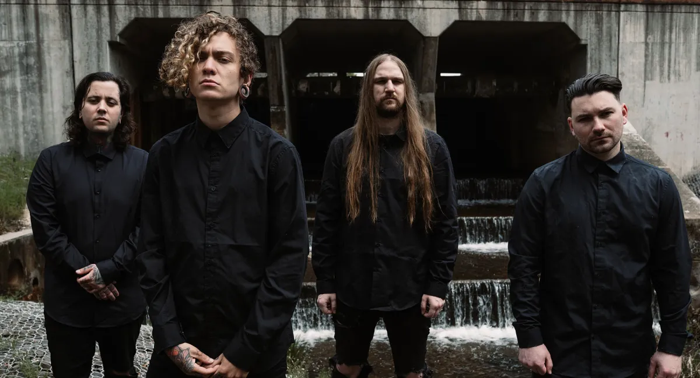
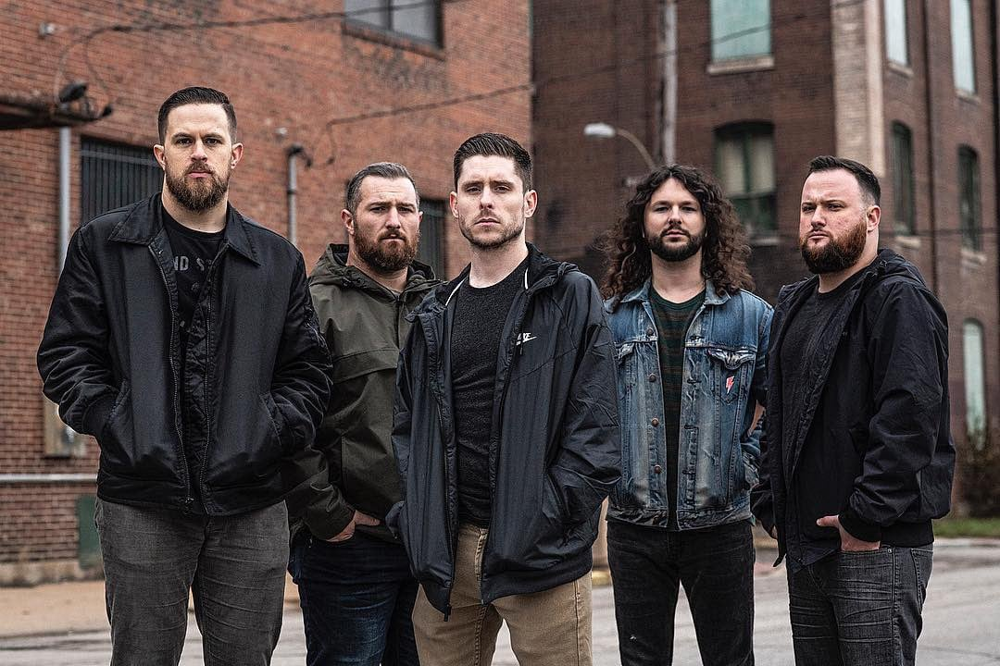
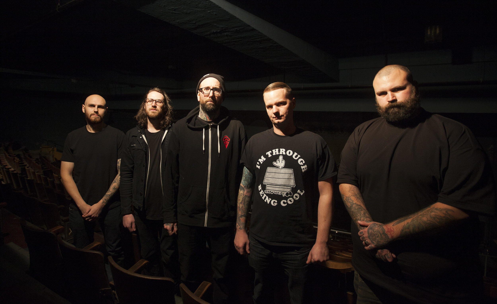

Metal Hub is a website dedicated to providing the latest news, reviews, and interviews on the metal music scene. The site features coverage on all sub-genres of metal including death, black, thrash, and heavy metal bands. You can find exclusive interviews with some of the biggest names in the industry, as well as upcoming and underground bands. The site also offers a comprehensive list of tour dates and festivals, and a forum for fans to discuss the latest developments in the metal world. Whether you're a die-hard metal head or just a casual listener, Metal Hub has something for everyone.

Band: Lorna Shore
Lorna Shore is an American deathcore band formed in
New Jersey in 2009. The group currently consists of lead guitarist
Adam De Micco, drummer Austin Archey, rhythm guitarist Andrew O'Connor,
vocalist Will Ramos, and bassist Michael Yager. The band is most known for
their 2021 single "To the Hellfire". They have released four studio albums
Psalms (2015), Flesh Coffin (2017), Immortal (2020), and Pain Remains (2022).
The band has also released four EPs.
Since 2017, no original members remain in the band.
Band: Chelsea Grin
Chelsea Grin is an American deathcore band from Salt Lake City, Utah. Formed in 2007, the group have released two EPs and five full-length albums. Since 2018, no original members remain in the band.
Chelsea Grin was originally founded under the name Ahaziah. The lineup for Ahaziah included vocalist Alex Koehler, guitarist Chris Kilbourn, bassist Austin Marticorena and lead guitarist Michael Stafford. Marticorena introduced Andrew Carlston to Chelsea Grin and assisted in rewriting their songs as well as the creation of new material as they changed the name to Chelsea Grin soon after. This writing process lead to the tracks on their first release, a self-titled EP that was streamed and released online through iTunes, then released on CD worldwide on July 27, 2008. Early on in the band's career, they released the songs "Crewcabanger" and "Lifeless" as singles, both of which were received well by listening audiences on Myspace.
The band later sought to add a third guitarist position which led to the acquisition of Dan Jones and David Flinn which followed into the writing of their full-length album Desolation of Eden (2010), following up this record was My Damnation (2011) before cutting into a 2012 EP titled Evolve.
In 2013, Pablo Viveros replaced founding drummer Andrew Carlston and started contributing vocals to their music, allowing lead vocalist Koehler to focus solely on the screamed vocals while Viveros took on the mid to low-ranged growls. Since then, the band released two more full-lengths, Ashes to Ashes in 2014 and Self Inflicted in 2016. As of 2018, the band ended their longtime tenure of featuring three guitarists to now only featuring one. That same year, vocalist Koehler departed from the band and was replaced with Lorna Shore vocalist Tom Barber. With this new four-piece lineup, Chelsea Grin officially released their fifth album Eternal Nightmare on July 13, 2018.

Band: Whitechapel
Whitechapel is an American deathcore band from Knoxville, Tennessee. The band is named after the Whitechapel district in East London, England, where Jack the Ripper committed a series of murders. The group comprises vocalist Phil Bozeman, guitarists Ben Savage, Alex Wade, and Zach Householder and bassist Gabe Crisp. Founded in 2006 by Bozeman and Savage, the band has released eight studio albums and fourteen music videos, and are currently signed to Metal Blade Records. Whitechapel's 2010 album A New Era of Corruption, sold around 10,600 copies in the United States in its first week of release and debuted at position No. 43 on the Billboard 200 chart. The band's self-titled fourth album was released in 2012 and debuted at No. 47 on the Billboard 200, selling roughly 9,200 copies in its first week. In 2014 the band released their fifth full-length album, Our Endless War to generally positive reviews. The album sold roughly 16,000 copies in its first week and debuted at No. 10 on the Billboard 200. They released their sixth full-length album Mark of the Blade in 2016 to greater critical acclaim, selling roughly 8,000 copies in the first week of its release. In 2019, Whitechapel released their seventh album, The Valley, which debuted at No. 143 on the Billboard 200 also to critical acclaim. Their newest album, Kin, was released on October 29, 2021.

Band: The Acacia Strain
Forming in 2001, The Acacia Strain was started by high school friends Vincent Bennett, Christopher Daniele, and Ben Abert. Looking to bring their current band Septic Orgasm to the next level of technicality, they brought in their mutual friend, Karrie Whitfield, and high school student Daniel "DL" Laskiewicz to play bass and guitar respectively. The band began playing local shows around Massachusetts and recorded their demo in 2001.
After DL received a shoulder injury while playing high school football, Bennett asked friend and current Blood Has Been Shed guitarist, Daniel Daponde, to fill in on guitar while DL healed from his injury. The group felt Daponde brought a heavier and more technical aspect to the band, so when DL returned they wanted Daponde to stay, thus forming the unusual three guitar lineup.
After countless local shows, including quite a few in Bennett mother's basement, the band was approached by Toby Dutkiewicz, who ran Devil's Head records, if they would join his label. The band agreed and recording for their debut album ...And Life Is Very Long began in 2002 at Zing recording studio in Westfield, Massachusetts with Adam Dutkiewicz and Jim Fogarty at the helm with Jim doing most of the tracking.